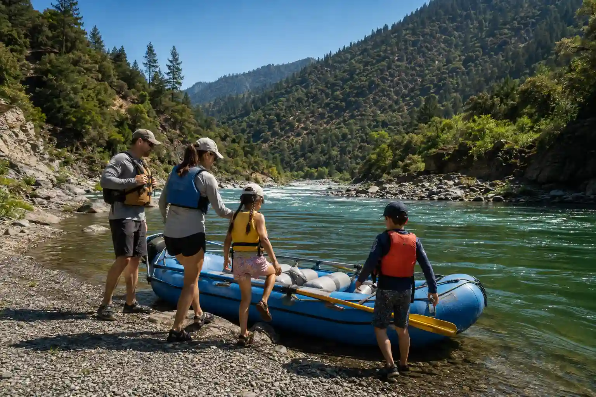
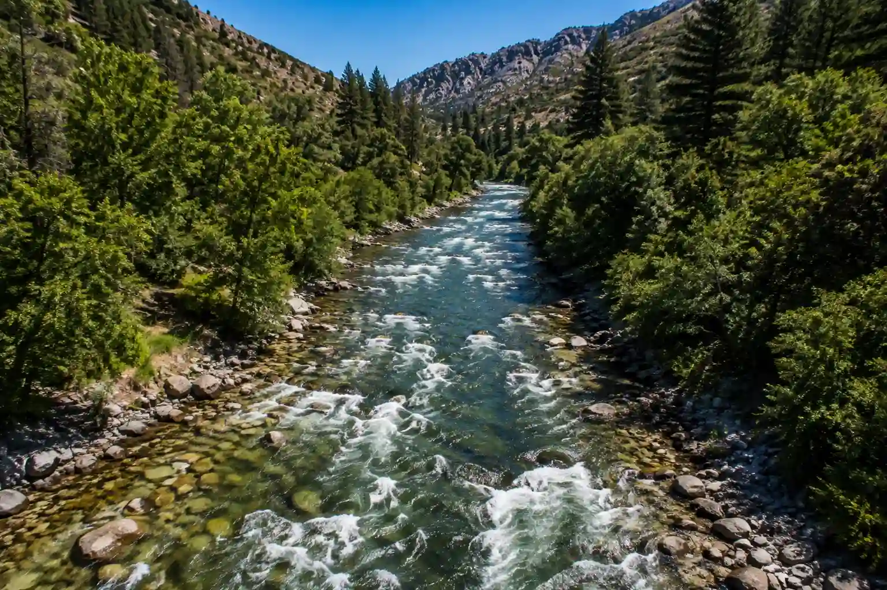
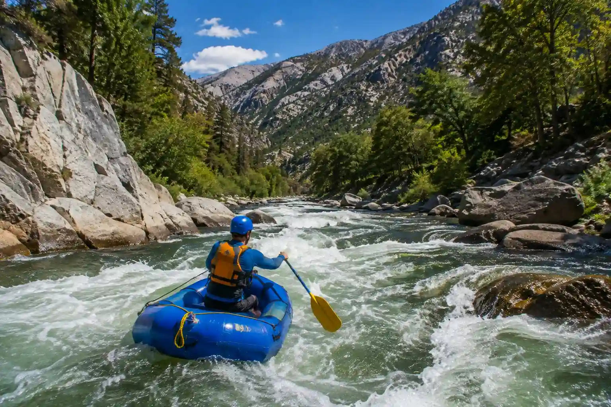
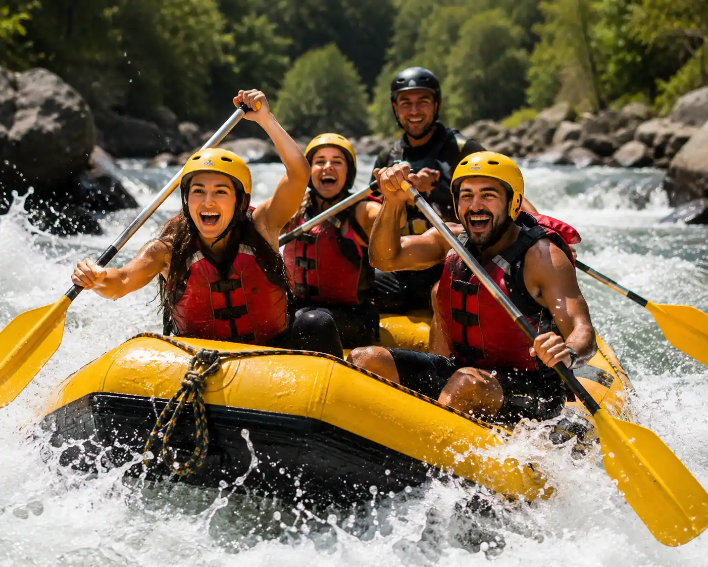

The Best Rafting Trips!

The Salmon River flows through Idaho, dropping over 7,000 feet before joining the Snake River. It is one of the largest free-flowing rivers in the continental U.S. and the longest river system within a single state.
Salmon River

Cherry Creek, also known as the Upper Tuolumne, is one of the most challenging commercial rafting trips in the U.S. This thrilling adventure features 9 miles of Class V rapids, stunning granite canyons, and remote Wild & Scenic landscapes, delivering an unforgettable experience for experienced adventurers.
Cherry Creek River

Located near Sequoia National Park, the Kaweah River offers exciting Class IV+ rapids, technical whitewater, and breathtaking Sierra scenery. Perfect for adventurous paddlers seeking a fast-paced, adrenaline-filled rafting experience.
Kaweah River
Next Adventures
| Trip | Difficulty | Best for | Duration | Season |
|---|---|---|---|---|
| Merced River | Class III-IV | Families & Friends | Full Day | May–July |
| Middle Fork River | Class IV | Adventure Seekers | 2 Days | June–September |
| South Fork River | Class III | Beginners | Half Day | April–October |
| Tom Sawyer River | Class II | Children & Families | Half Day | May–September |
| Tuolumne River | Class IV-V | Experienced Rafters | 2 Days | June–August |
Plan Your
Perfect Trip with Us!
Contact our team and we'll help you choose the perfect rafting adventure.
Get in Touch!